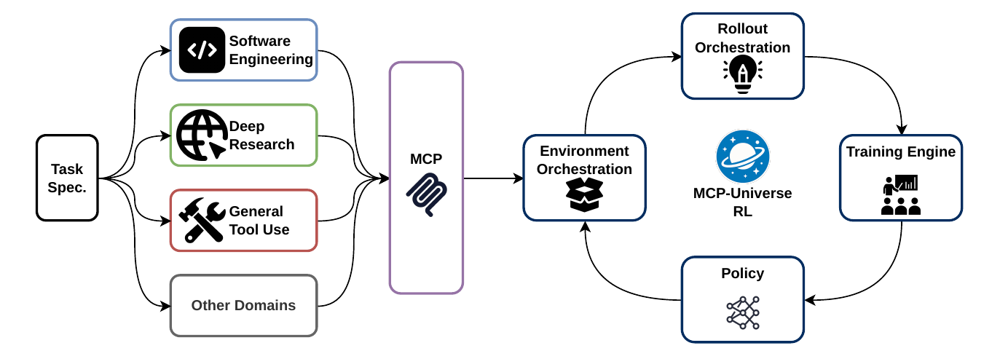
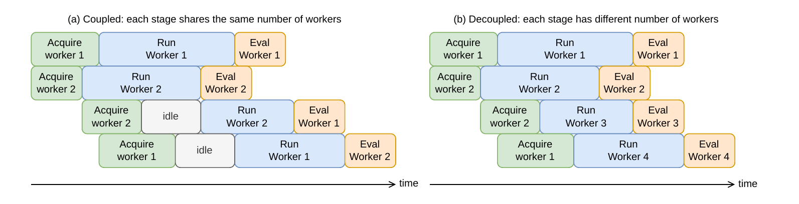
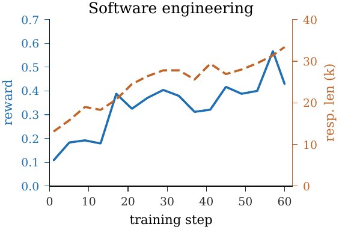
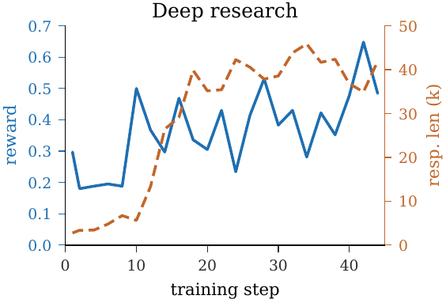
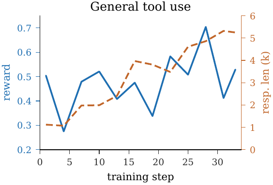
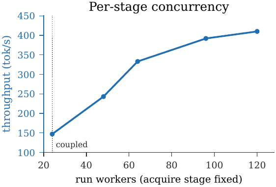

MCP-Universe RL: A Framework for Training MCP Tool-Use Agents via Reinforcement Learning
Ziyang Luo · Yan Yang · Xiangru Jian · Ziji Shi · Xiaoqiang Lin · Jun Hao Liew · Silvio Savarese · Junnan Li
Salesforce AI Research
MCP-Universe RL builds the missing environment- and rollout-orchestration layers once, then reuses them across domains through a shared Model Context Protocol interface.
One framework configuration · Only the task specification changes across domains
The systems gap
Tool-use RL needs more than a policy update
General RL backends optimize the policy, but users still have to solve two recurring systems problems for every new tool-use domain.
01
Environment orchestration
Hundreds of concurrent trajectories need isolated, reachable environments because shared state can collide and corrupt the reward. Provisioning, health checking, resetting, and recycling those environments is a reusable systems problem.
02
Rollout orchestration
Long, multi-turn episodes alternate between GPU generation and slow tool calls. Too little overlap leaves the GPU idle; unconstrained concurrency can exhaust host memory with live environments.
Reusable architecture
One MCP interface, three shared layers
Domains differ in their tools and evaluators, while the framework passes data—not domain logic—through the same orchestration and training path.

Task specifications expose each domain through MCP. Environment Orchestration, Rollout Orchestration, and the Training Engine are reused while only the domain task specification changes.
E
Environment Orchestration
Provisions, isolates, checks, resets, and recycles MCP environments over a pluggable container backend, with each environment reached through its own MCP gateway.
R
Rollout Orchestration
Runs overlapping episodes, records trainable tokens, and invokes the task evaluator so finished interactions become scored trajectories.
T
Training Engine
Adapts backend-neutral batches to an existing RL backend. The current integrations support veRL and slime, while the backend and algorithm remain configurable.
Rollout pipeline
Acquire → Run → Eval, overlapped
The rollout engine separates stages by resource, then sizes their worker pools independently to keep generation busy without increasing the live-environment budget.
Stage 1
Acquire
Provision or reuse an isolated environment and run any per-instance setup.
→Stage 2
Run
Drive the agent over MCP while other trajectories wait on their tool calls.
→Stage 3
Eval
Score the finished episode against the live environment, then release it.

Coupled concurrency makes every stage share one worker limit. Decoupled per-stage concurrency adds Run workers independently, overlapping tool waits while the Acquire stage and live-environment capacity remain bounded.
Run workers are set to at least twice the Acquire workers by default because acquisition is host-resource bound while generation is GPU bound.
Cross-domain training
The same framework improves reward in three settings
All runs train the open-weight gpt-oss-20b policy with GRPO. The framework configuration stays fixed while each domain supplies its own task specification, tools, and evaluator.

R2E-Gym
Software Engineering
The agent uses one MCP shell tool to inspect and edit a real repository. Hidden tests run in the same isolated container to produce a binary reward.
Success rate
≈0.11 → ≈0.43
Response length
13k → 33k

DeepDive
Deep Research
A ReAct agent searches and reads the open web through Google Search and Jina Scrape MCP servers, then an evaluator scores its final answer against the reference.
Success rate
≈0.22 → ≈0.52
Response length
<3k → ≈40k

AgentWorldModel-1k
General Tool Use
The agent acts across code- and database-backed applications over MCP, while deterministic SQL or code verifiers inspect the resulting application state.
Success rate
≈0.48 → ≈0.55
Response length
1k → >5k
These experiments test framework reuse across substantially different environments and reward checks; they are not claims of state-of-the-art benchmark performance.
Systems evidence
More useful work from the same live-environment budget
2.8×rollout throughput
≈2×end-to-end throughput
On the software-engineering workload, decoupling Run concurrency from Acquire concurrency raises rollout throughput from 147 to 410 tokens per second while the Acquire stage and live-environment count stay fixed.
At matched concurrency, fully asynchronous GPU placement improves training throughput from 3.1 to 6.3 steps per hour and reduces time per step from 1,164 to 572 seconds—approximately 2× faster than colocated placement. It is one-step off-policy, using trajectories at most one step stale.

Per-stage concurrency on the software-engineering workload. Acquire stays at 24 workers and the live-environment capacity stays at 120 as Run workers increase.
Open source
Build on MCP-Universe RL
MCP-U RL is released as open source under the Apache-2.0 license. The release includes the three reusable layers and runnable configurations for software engineering, deep research, and general tool use.